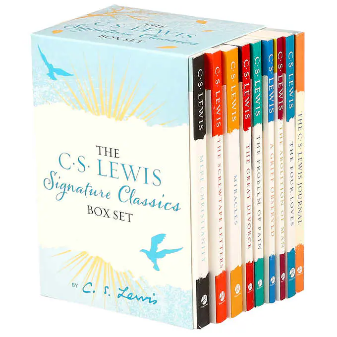

Clive Staples Lewis (1898–1963) was one of the intellectual giants of the twentieth century and arguably one of the most influential writers of his day. He was a Fellow and Tutor in English Literature at Oxford University until 1954, when he was unanimously elected to the Chair of Medieval and Renaissance Literature at Cambridge University, a position he held until his retirement.
Lewis wrote more than thirty books, allowing him to reach a vast audience, and his works continue to attract thousands of new readers every year. C. S. Lewis’s most distinguished and popular accomplishments include Mere Christianity, Out of the Silent Planet, The Great Divorce, The Screwtape Letters, and the universally acknowledged classics in The Chronicles of Narnia. To date, the Narnia books have sold over 100 million copies and been transformed into three major motion pictures. 